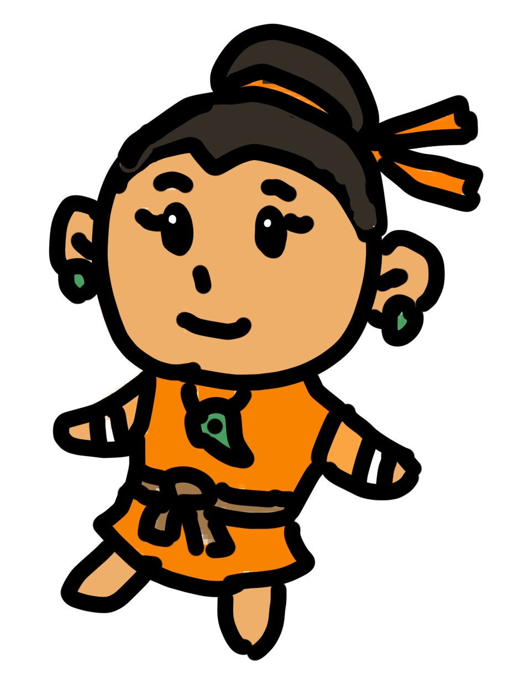
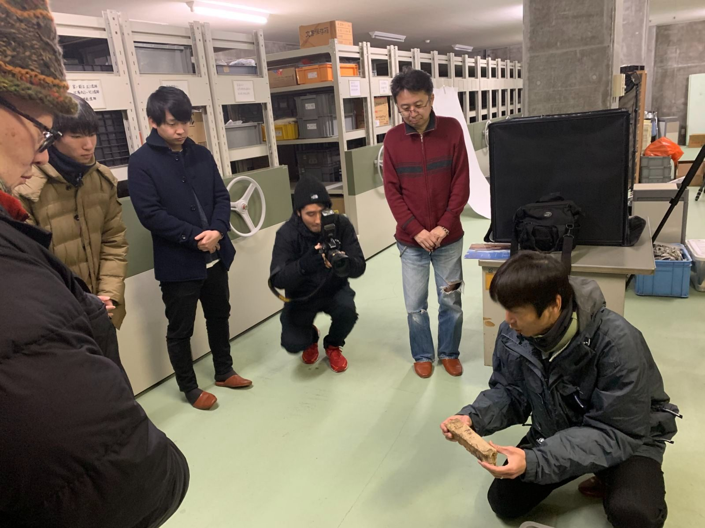

ACTIVITIES
活動内容

01 / COMMUNICATION
コミュニケーション
発信は仲間づくりだと考えています。
2019年：Facebook、Twitter、Instagramを開始。
2020年：Twitter(石棒くん)、note、YouTubeを開始。石棒キャッチコピーを募集し、300を超えるキャッチコピーが集まる。
2023年：石棒クラブのセキボウラジオを開始。飛騨みやがわ考古民俗館の楽しみ方動画も製作。
2025年：執筆に関わった書籍が発売！

02 / TECHNOLOGY
テクノロジー

03 / EVENT
イベント
映画上映会や石棒撮影ボランティアイベント、考古館バックヤードツアーなど、オンラインオフライン問わず、様々な種類のイベントを企画・運営しています。
2019年 石棒ナイト（映画上映会/トークショー）／考古館バックヤードツアー/石棒バー
2020年 石棒撮影ボランティア／考古館オンラインツアー（申込200名）／おうちで飛騨の縄文めぐり（オンライン）／博物館オンラインクイズクエスト（オンライン）／Go To タイムスリップ
2021年 石棒撮影ボランティア／3Dデータ化が未来を創る？（オンライン）／みんなの“やさしい”縄文ミュージアム
2022年〜 毎年11月に石棒強化月間を実施。そのほか3Dデータ化合宿など、様々な取り組みを続けています。
2023年〜 一日館長（石棒クラブのメンバーやファンが、飛騨みやがわ考古民俗館を一日運営）／日本文化財VRミュージアムに参加
